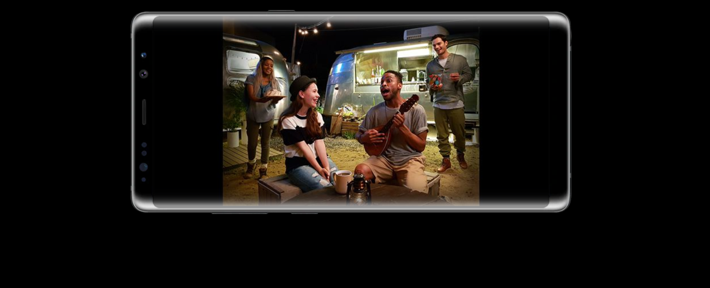
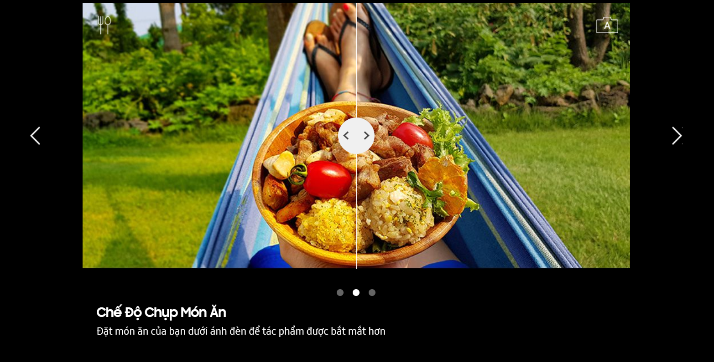
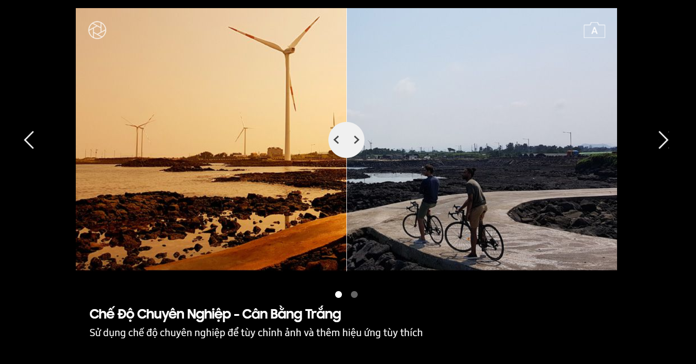
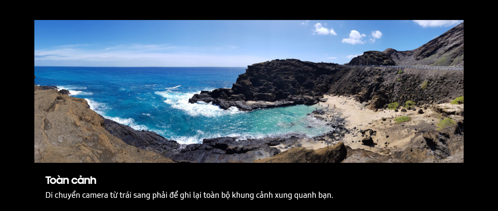
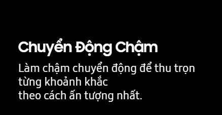
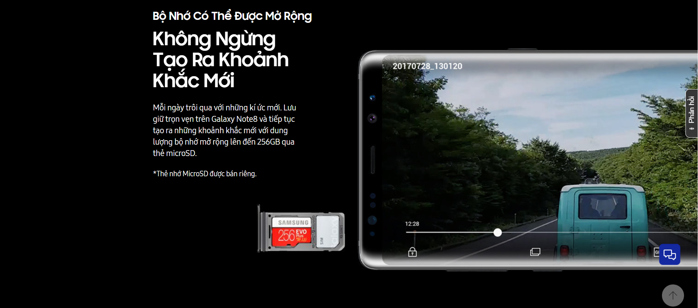

Ổn Định Để Lấy Nét. Camera Kép Với Công Nghệ Chống Rung Quang Học (OIS) Kép.
Zoom quang học + chống rung quang học (OIS) kép
Lấy nét trực tiếp
Chụp ảnh kép
Zoom Quang Học 2x + Chống Rung Quang Học (OIS) Kép
Mỗi Khoảnh Khắc, Chi Tiết và Sắc Nét
Chụp ảnh sống động với Camera kép trên Galaxy Note8. Cả hai ống kính đều sở hữu công nghệ chống rung quang
học (OIS) cho những bức ảnh đẹp hoàn hảo ngay cả khi tay cầm điện thoại không ổn định. Đặc biệt, ống kính Tele
mang đến hình ảnh rõ nét từng chi tiết với khả năng zoom lên đến 2x.
*Ảnh trên màn hình được chụp bởi Galaxy Note8
Xóa Phông Chủ Động
Chế Độ Xóa Phông Tùy Chọn
Lấy nét trực tiếp như mong muốn ngay trước khi ấn nút chụp. Tính năng lấy nét trực tiếp cho phép chụp ảnh xóa
phông
hoàn hảo để làm nổi bật chủ thể. Và nếu chưa thực sự hài lòng, bạn có chức năng tuỳ chọn
để điều chỉnh lại mức độ mờ sau đó.
*Ảnh trên màn hình được chụp bởi Galaxy Note8
Chụp Ảnh Kép
Chụp Nhanh Ngoài Khung Hình
Khi bạn chụp ảnh ở chế độ lấy nét trực tiếp, Camera kép với ống kính góc rộng sẽ cùng lúc ghi lại cả khung
cảnh
đang diễn ra ngoài khung hình, để bạn lưu giữ toàn bộ khung cảnh, không bỏ lỡ bất cứ ai.
*Ảnh trên màn hình được chụp bởi Galaxy Note8
BẬT
TẮT

Camera Làm Chủ Bóng Đêm
Cảm biến Dual Pixel
Ống kính sáng
Các điểm ảnh lớn
Camera Chụp Thiếu Sáng
Sẵn Sàng Thách Thức Bóng Đêm
Ảnh đẹp hoàn hảo ngay cả khi chụp vội trong đêm tối. Ống kính góc rộng của Galaxy Note8 với điểm ảnh
lớn 1.4µm và ống kính sáng khẩu độ f/1.7 giúp thu nhiều ánh sáng hơn, đồng thời cho khả năng lấy nét
nhanh và chính xác nhờ cảm biến Dual Pixels.
*Ảnh trên màn hình được chụp bởi Galaxy Note8
Camera Trước Bắt Trọn Mọi
Khoảnh Khắc
*Hình ảnh được chụp bởi Galaxy Note8
Chế độ chụp món ăn
Chế độ chuyên nghiệp
Chế độ chụp toàn cảnh
Chế độ chuyển động chậm




Camera selfie
Camera trước
Ống kính sáng
Lấy nét tự động thông minh
Camera Trước
Camera Trước Theo Chân Từng Trải Nghiệm
Bật camera trước chụp selfie hoặc wefie, bạn sẽ luôn sẵn sàng để chia sẻ. Ống kính sáng ghi lại từng
chi tiết sắc nét ngay trong điều kiện thiếu sáng, trong khi chế độ lấy nét tự động thông minh sẽ giúp
nhận diện mọi khuôn mặt trong khung hình.
*Ảnh trên màn hình được chụp bởi Galaxy Note8
Bắt Trọn Mọi Khoảnh Khắc Cuộc Sống Cùng Galaxy Note8
Xem thêm nhiều khoảnh khắc được ghi lại bởi Galaxy Note8 trong bộ sưu tập.
*Hình ảnh được chụp bởi Galaxy Note8

Hình ảnh từ Galaxy Note8
Xem những khoảnh khắc được ghi lại bởi Galaxy Note8 trong thư viện hình ảnh